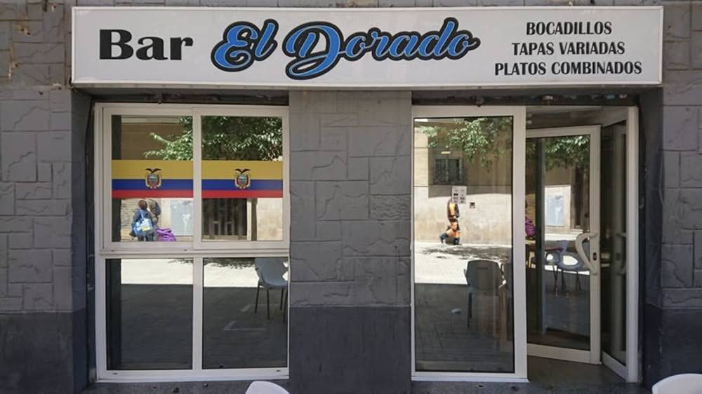
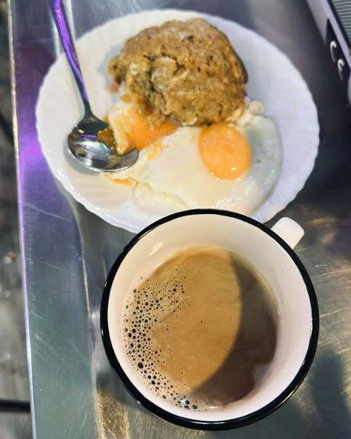
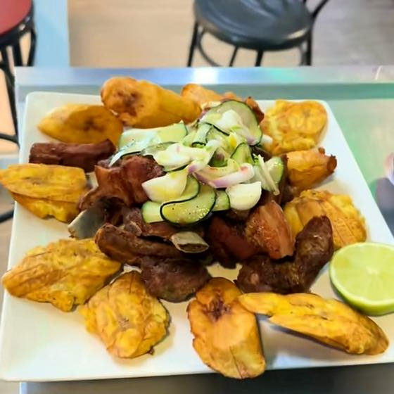

Abierto desde 2006.
Invisible en Google.
Bar El Dorado, en L’Hospitalet de Llobregat. El rótulo de la calle dice bocadillos, tapas variadas y platos combinados. La cocina hace encebollado, seco de pollo y bolón de verde: comida ecuatoriana de casa. En Google constaba como «bar», sin carta, sin web y con un horario que nadie había comprobado.
Así que quien buscaba comida ecuatoriana cerca no lo encontraba, y quien lo encontraba no podía saber qué se comía dentro.



Hechas en el bar y en sus propios platos. Sin banco de imágenes y sin comida de otro restaurante.
Lo que no
cuadraba
Tres cosas, y ninguna era el diseño de la web.
El rótulo y la cocina dicen cosas distintas. El rótulo trae al vecino que quiere un bocadillo; la cocina es por lo que alguien cruza la ciudad. Google tiene que llevar las dos, o pierdes a la mitad. El perfil está ahora en dos categorías: bar y restaurante ecuatoriano.
El horario que se recordaba en casa no era el de la puerta. Se comprobó antes de tocar nada, y es el mismo que aparece ahora en la web y en Google. Un horario que miente te cuesta un cliente delante de una persiana bajada, y ese cliente no vuelve.
Lunes cerrado · Martes a jueves 10:30–23:00 · Viernes a domingo 11:30–23:00
No había un teléfono publicable. El que se usa es un móvil personal, así que se queda fuera de internet. No se inventó nada para rellenar el hueco: la ficha lleva la dirección, cómo llegar y la carta, y eso es lo que lleva.
Lo que se entregó
Un perfil de Google que dice qué se come
Dos categorías, una descripción escrita, el horario real, la web y una carta de 19 platos y bebidas que se lee sin salir de Google.
Una web de una página, con la carta dentro
Carta, bebidas, horario y cómo llegar, pensada para el móvil. Con su aviso legal, con el nombre y el NIF de la titular, porque la ley lo pide y un bar no puede inventarlo.
Seis fotografías, hechas en el bar
La fachada y cinco platos, en la vajilla del bar y sin caras de clientes. Es lo que mira de verdad quien está decidiendo dónde comer.
- Lo que llevó
Una tarde en el bar para las fotos y la carta, y un día de trabajo. La familia aprobó cada precio y cada nombre de plato antes de publicar nada.
- De quién es
La web y el perfil de Google son del bar y están a nombre de su titular, no del mío. Así es cada trabajo de aquí: te lo puedes llevar.
- Lo que queda abierto
El precio de cada plato, una foto para los que faltan y responder las reseñas que ya hay en la ficha. Apuntado y con fecha, no olvidado.
El botón abre tu aplicación de correo. Responsable: James J Benavides; finalidad: responder a tu consulta y preparar un presupuesto. Puedes consultar tus derechos y la política de privacidad en Privacidad.